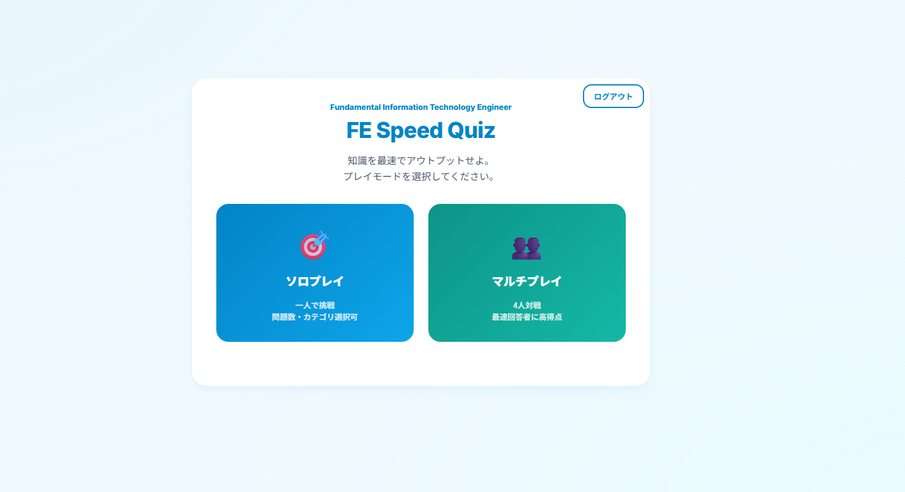
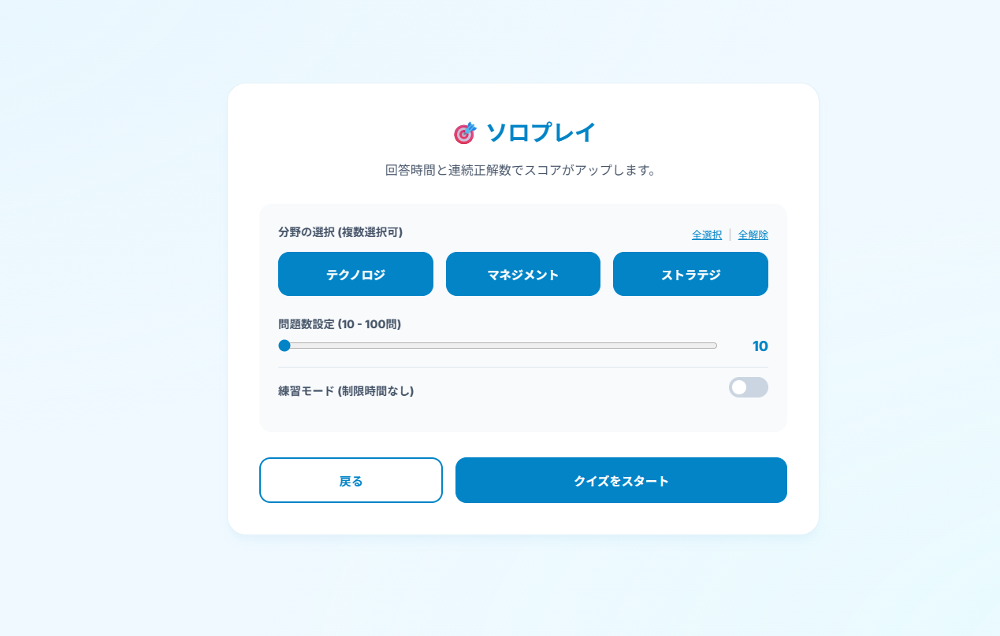
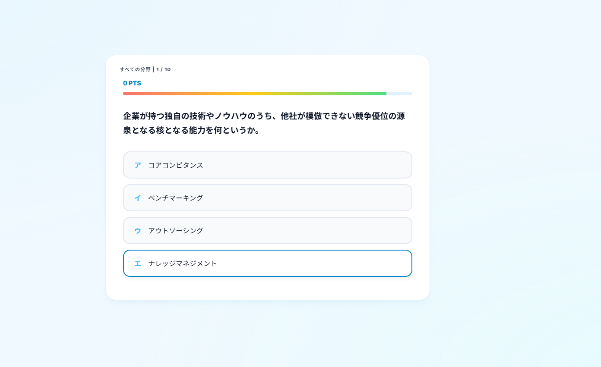

プログラマーを目指して学習しています
プログラマーを目指してIT系の専門学校で学んでいます。
学校では、Python、MySQL、Firebaseなどを使った プログラミングやデータベースについて学習しています。
実際にプログラムを作りながら、 「なぜこの処理が必要なのか」 「どうすれば使いやすくなるのか」 を考えることを大切にしています。
将来は、利用する人にとって便利で使いやすい システムを作れるプログラマーになりたいと考えています。
プログラミングの基礎や、 条件分岐・繰り返し・関数などを学習しています。
SQLを使用したデータ操作や、 データベース設計について学習しています。
Firebase AuthenticationやFirestoreを使用し、 ユーザー認証やデータ管理を経験しました。
ユーザーがオンラインでクイズに挑戦できる Webアプリを制作しました。



Python / Firebase Authentication / Firestore / HTML / CSS / JavaScript
・ユーザー登録・ログイン
・ユーザー情報の管理
・クイズルームの作成・参加
・Firestoreを利用したデータ管理
・クイズへの回答
ユーザー情報やルーム情報などをFirestoreで管理し、必要なデータを取得できるように設計しました。 また、クイズルームを作成して他のユーザーが参加できるようにし、オンラインで複数人が一緒にクイズを楽しめる仕組みを実装しました。 制作中に発生したFirebaseの権限設定によるエラーについても、原因を調べながら設定を見直し、問題を解決しました。
Webアプリを制作する中で、プログラムだけでなく、 ユーザー認証やデータベース、セキュリティ設定など、 複数の仕組みを組み合わせる必要があることを学びました。